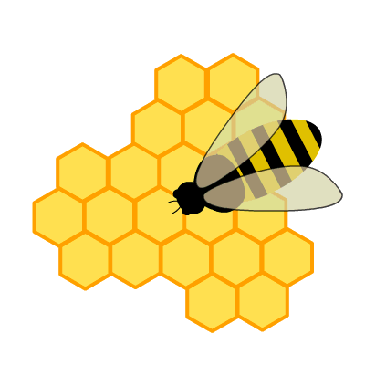

What is the Artificial Bee Colony Algorithm?
The Artificial Bee Colony (ABC) Algorithm is inspired by the foraging behavior of honey bees. It simulates the process of bees searching for food to solve complex optimization problems, like allocating resources efficiently.
It uses three types of bees — Employed, Onlooker, and Scout — to balance solution refinement and discovery.

Set Parameters
Enter the number of tasks and resources to simulate the algorithm.